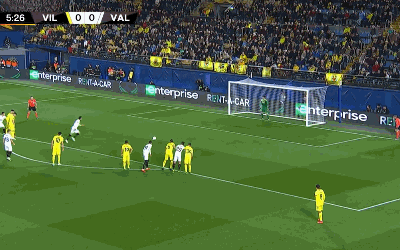

Javi Mata(periodista)Ferran coje el balon , intenta irse de uno, pero decide pasarla atras, PEROOOOOO, que ha hecho ahi, mal pase de frran que acaba en los contrarios para hacer el contrataque.
PENALTIIIIIIIIII, EL CENTRAL DEL VILLAREAL DESPLAZO CON UNA FUERTE ENTRADA AL DELANTERO DEL EQUIPO CONTRARIO.
Final del partido, el Villareal cae derrota por un Gol de penalti.